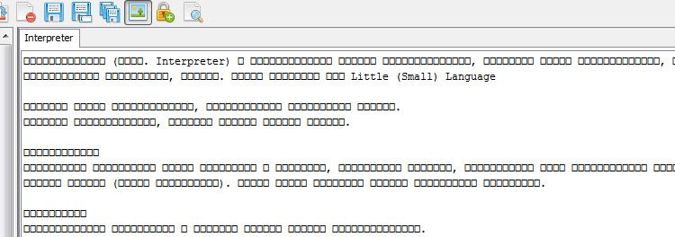
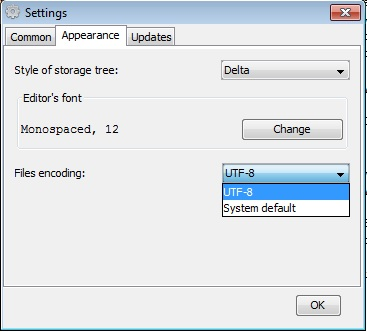

By fault of author, first versions of MStorage (< 1.1.3) used system default encoding to create, update and read files. But different OS can use different default encodings. For example, in russian locale in Win7 default encoding is cp1251, but for Ubuntu16 it is UTF-8. That means, files created in Ubuntu not possible to read in Win7 and conversely. You will see something like this:

To solve the problem, you should always use UTF-8 encoding. For this reason was created new property in Settings "Files encoding":

When you set up files encoding as UTF-8 all operating systems will create, save and update files in your common storage as UTF-8.
The problem appears when you will work with files, created in different encoding than UTF-8.
To cure this, you must convert all files in your storage to UTF-8 encoding.
Firstly, setup files encoding in Settings as UTF-8.
Secondly, follow next steps:
If you don't need use MStorage in different OS you can continue you work as usual without any additional actions.
But be aware, as long you will work in default system encoding, amount of files in your storage can become bigger. Imagine if you want convert 100 files in future?
It is highly recommend for storages created in versions MStorage <1.1.3 convert all files to UTF-8.